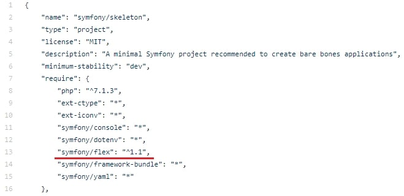
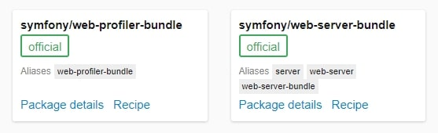

Before Symfony Install
beforeInstall
Symfony предлагает два варианта установки:
- - skeleton;
- - website-skeleton.
-
Разница заключается лишь в наборе подключаемых компонентов. Достаточно взглянуть на composer.json каждого из пакетов.
-
skeleton - ваш выбор, если стоит задача создать API, микросервис или консольное приложение. По сути это минимальный набор компонентов, ничего лишнего, подключаете все по необходимости. Далее в уроках, мы будем разрабатывать именно на нем, попутно ознакамливаясь с подключаемыми пакетами.
-
website-skeleton - подготовлен для создания традиционного веб-приложения. Все, что мы будем подключать через composer отдельно – тут уже в наличии. Какие компоненты входят по умолчанию можно посмотреть здесь.
Symfony Flex
Flex, как говорится в документации – «Это новый способ установки и управления приложениями Symfony». По сути представляет из себя обычный плагин composer. Орудует этот плагин «рецептами», которые в свою очередь подтягиваются с сайта https://flex.symfony.com. 
{kind=link}
Например, вам необходимо подключить библиотеку для работы с почтой (swiftmailer или аналог).
Обычно в такой ситуации пишут в консоли
composer require swiftmailer/swiftmailer, после чего
composer тянет с сайта
https://packagist.org
библиотеку по принципу vendor/package-name. В Symfony такой вариант подключения будет работать точно так же,
как и везде, но все же есть вариант получше. Здесь мы напишем composer require mailer.
Дальше происходит следующее - Flex начнет искать рецепт «mailer» на сайте https://flex.symfony.com и, если рецепт с таким псевдонимом существует, начнет подтягивать его в ваш проект. Но расположит он его не только лишь в папке vendor, но и может закинуть в проект какие-то компоненты, шаблоны, изменить конфиги и что-нибудь еще согласно рецепту, попутно обновив symfony.lock. Список алиасов можете увидеть в окне с рецептом.  Как создать свой рецепт, да и почитать подробнее можно в документации. Поскольку мы будем использовать именно skeleton–приложение, нам предстоит установить несколько десятков рецептов. Ну а поскольку мы учимся - воспринимайте это как опыт, а не рутину.
{kind=link}